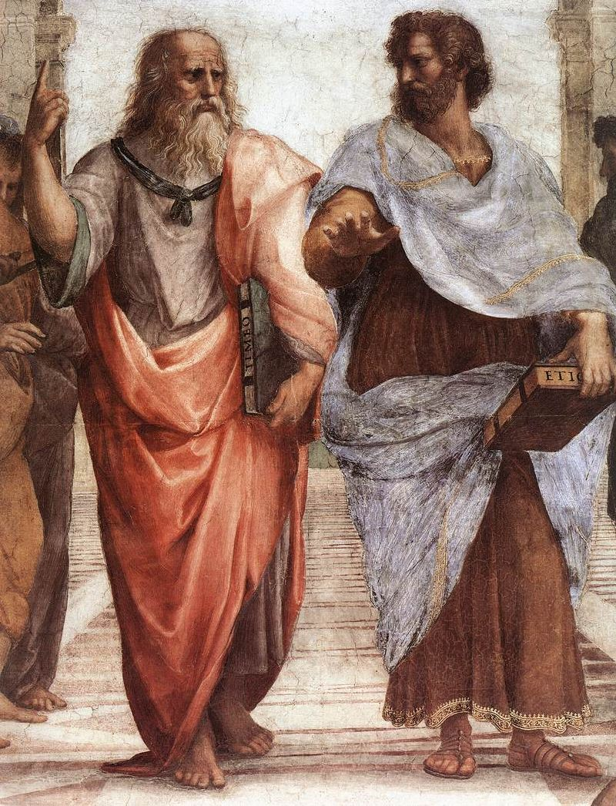

5) Kozmolojilerin Çatışması
Tanrı, Roma Kilisesi’ni yozlaşmış yöntemleri, merasimleri ve aynı suistimalleri desteklemek için tasarlanmış çeşitli iğrenç öğretiler hakkında hesap vermek için çağırdığı, aynı zamanda bir yenilenmenin,bilimde de dahil olmak üzere yeni bircanlılık ve tazeliğin olmasını buyurdu.
Francis Bacon
ilim adamları, filozoflar, siyasetçiler ve generaller kadar dünyada geniş çaplı etkilere sahip büyük atılımları başlatabilirler. Örneğin Darwin’in doğal ayıklama teorisi, hem Marksizm hem de Nazizm için ana unsurdu. Daha önce gördüğümüz gibi, Einstein’ın görecelilik teorisi toplumun Yahudi-Hristiyan inancı ve ahlakıyla olan geleneksel bağlarının zayıflamasına neden oldu. Bu nedenle bilim adamları ve kilise arasındaki etkileşimin incelenmesi sosyo-politik bir güç olarak Hristiyan aleminin çöküşü sürecinde ‘bütünü oluşturan unsurlardan biridir’.
Bilimin ve teolojinin iddiaları gerçekten birbiriyle çelişir mi? Kendi bilgi kuramsal temelleri gerçekten birbirleriyle bağdaşmaz mı? Ya da iki ilke arasında varsayılan bu çatışma, doğrulukları kanıtlanamayan ilkelere mi dayanır? Bilimsel bilgideki artış niçin Batı Dünyası’ndaki Hristiyan aleminin yok oluşunda bu kadar önemli ve temel bir unsurdur?
Genellikle 16. ve 17. yüzyıllarla bağdaştırılan Bilimsel Devrim, gerçekte Orta Çağlar’da üzerinde çalışılan bilime karşı meydan okunmaya başlanıldığı Rönesans döneminin başlarına kadar geriye uzanır. Bilim gelişti yeni bilimsel teoriler ortaya çıktı ve bunlar Aristo fiziğini çürüterek yerine skolastik felsefenin geçmesine neden oldu. İnsanların yaşama bakışlarını değiştirdi ve böylece Batı kültürünün de özünü esaslı bir şekilde değiştirdi. Modern dünyanın oluşmasındaki başlıca etken haline geldi. Şimdi biraz ön bilgi edinelim.
A. Aristoteles (Aristo) Kozmolojisinin Altın Çağı
Eski Grek’lerin değişmez dogmalardan oluşan bir kutsal kitabı olmadığı için devlet ve filozoflar/teologlar arasında anlaşmazlıklar çok ender rastlanan bir şey idi. Grek düşünürleri, savundukları şey, şehir-devlet refahı için bir tehdit niteliği taşımadığı sürece (Sokrates’in durumunda böyle olmuştu) fikirlerini yaymakta özgürdüler. Grekler arasında en popüler olan düsünce sistemi filozof Aristoteles’inkilerdi (M.Ö. 384-322). Onun felsefesi yüzyıllar sonra, İslam’ı yeni kabul etmiş olan Arapları ciddi şekilde etkileyecek; böylece onun görüşleri Batı’ya tekrar ulaşarak 17. yüzyıla kadar egemenliğini sürdürecekti.
Aristoteles’in evreni, kendisinin ötesinde hiçbirşeyin varolmadığı sınırlı boyuttaki bir küreden meydana geliyordu. Bu kürenin merkezinde, merkezleri ortak bir dizi su, hava ve ateş küreleriyle çevrili olan dünya yer alıyordu. Ateş küre; etrafında güneş, ay ve gezegenlerin döndüğü bir rota görevini gören saydam ve kristalimsi yedi adet katı küre ile çevriliydi. En dıştaki küre dönerken, diğer kürelerdeki hareketi de etkiliyordu.
Ay, evrende işleyen iki çeşit yasa arasında bir sınır oluşturuyordu: ayın-altı doğa kuralları, ayın altında kalan bölgeyi, diğer kurallar ise ay ve ayın üzerindeki küreleri kapsıyordu. Ayın altında kalan bölge kusurlu bir bölgeydi, nesiller, yozlaşma, değişim ve bozulmayı temsil ediyordu. Buradaki hareket düz çizgiler halindeydi, bu nedenle geçiciydi. Fakat ayın üzerindeki göksel bölgeler kusursuz ve sonsuzdu. Burada hiçbir değişim meydana gelmezdi; dünya, su, hava ve ateş gibi kusurlu olanlar, yani yeryüzüne ait olan şeyler, yoktu. Buradakiler başka bir maddeden, Aristoteles’in öz olarak adlandırdığı beşinci bir elementten yapılmıştı; hareket de düz çizgiler halinde değil, kalıcı olan dairesel şekildeydi. Bu nedenle ay ve diğer gök cisimleri sabit ve sonsuz daireler halinde hareket ederlerdi.
Aristoteles’in kozmolojik anlayışı onun teolojik kavramlarına dayanıyordu. Tamamen kusursuz olan ve dolayısıyla Tanrı’nın kendisi statik haldeyken, evrendeki hareketin mutlak nedeni olduğunu öne sürdü. O, hareket etmediği halde Hareket Ettirici, yıldızların en dış kürelerinde fiziksel bir dokunuşla değil, ruhsal olarak hareketi başlatmıştır. Söz edildiği gibi, dış küredeki bu devinim, ortak merkezli kürelerdeki hareketi ve bu da, ayı etkiliyordu.
Eğer gök cisimleri sevgi gibi ruhsal bir kuvvetle hareket ettirilebilselerdi, bir ruh ya da can taşımaları gerekirdi. Aristoteles her bir küreyi hayvanlara benzetti. Her bir küre hareket etmeyen Hareket Ettirici gibi olmak istiyordu, bu, bir ideal olarak sonsuzluğun kusursuzluğunda değişmeyen dairesel hareket haline geldi. Aristoteles’e göre göklerde herhangi bir değişime şimdiye kadar kimse tanık olmamıştı.
Aristoteles’in evren görüşü antik çağın en önemli gökbilimcilerinden ve coğrafyacılarından biri olarak bilinen Ptolemaios (100?-165? M.S) tarafından oldukça fazla kabul gördü. Ptolemaios’un çalışmaları ve teorileri çokca beğenildiği için muazzam anlamına gelen Almagest olarak adlandırılan on üç ciltlik Matematiksel Oluşum’da (“Mathematike Syntaxis”) toplanmıştır.
Fikirlerini Grek gökbilimci Hipparchus’unkilerden yararlanarak geliştiren Ptolemaios, dünyanın hareket halinde olduğu görüşünü de reddetti. Bütün hareketin dünyanın merkezine doğru ya da merkezi çevresinde meydana geldiğini öne sürdü. Güneş, ay ve gezegenler farklı hızlarla dünyanın çevresinde dönerken, yıldızlar dönen bir küredeki sabit ışık noktalarıydı. Astroloji üzerine yaptığı önemli çalışmalar bu belirsiz inceleme alanının profilinin yükselmesine neden oldu. Ve böylece Avrasya kıtasının büyüklüğünü olduğundan fazla hesaplaması Colombus’un dünyadaki okyanusları gerçek büyüklüğünün altında çıkarmasına yol açtı. İyi bir sonuç doğuran bu hata nedeniyle Colombus 1492’de herkezce bilinen yolculuğuna çıktı.
Aristo’nun kozmolojisi, antik çağda oldukça popüler olsa da, dünya çapında kabul görmedi. Pythagoras ve Plato, bilim ve kilise arasındaki büyük çatışmaya neden oluncaya kadar fikir adamlarının canlı tuttukları dünyanın küreselliği görüşünü savundular.
B. Kilise Babaları ve Bilim
Kutsal Kitap genelde dünyayı gözle görüldüğü biçimde tanımlar: düzdür ve gökyüzü cisimlerinin etrafında hareket ettikleri bir gökyüzü ile çevrilidir. Fakat İskenderiyeli Clement, Origen, Ambrose, Augustinus ve saygıdeğer Bede gibi bazı açıkfikirli kilise babaları dünyanın küreselliği görüşüne karşı da oldukça ılımlıydılar. Fakat Eusebius, Lactantius, Chrysostomos ve Ephraem Syrus’la beraber, eski Süryani kilisesindekilerin de içinde bulunduğu pek çok kişi bu görüşe karşı çıktı. Bu, onlara Kutsal Yazılar’ın açık öğretilerine zarar vermek gibi görünüyordu. Sezariyeli (Kayseri) Basil ‘dünyanın küre mi ya da silindir ve ya disk şeklinde ya da ortasından iç bükey bir şekil almış halde olmasının bizi ilgilendirmediğini’ öne sürdü (Basil n.d.:1. Hom. 9:1).
Kilise babalarından bazıları temeli Kutsal Kitap’ı olan bir Hristiyan kozmolojisi oluşturmayı amaçlasalar da, fikirleri Aristo modelinin farklı versiyonlarının pek de ötesine gidemiyordu. Günümüzde Kilise Babaları’nın evrenin doğasından uzak görünen çeşitli fikirleri gülünç bulunsa da, putperest çağdaşlarının çoğunun da aynı fikirleri benimsediklerine dikkat edilmelidir.
Sonuç olarak, özellikle her an sona erebilecek olan bedendeki yaşamı Tanrı’ya uygun bir şekilde sürmeye odaklanan adanmış kilise babaları, zamanlarını ve zihinsel güçlerini sadece varsayımlar için harcayamazlardı. Yaşamda bilimden daha ciddi konular vardı: insan kendi çabalarıyla doğru bir şekilde düşünüp hareket edemezdi. Tanrı’nın aydınlatmasına sürekli bir ihtiyaç içerisindeydi. Kutsal Yazılar mutlak doğrunun kaynağıydı; bilim de dahil yaşamın her alanı için mutlak esinlemeyi içerirdi. Adanmış Hristiyan, doğanın sırlarıyla Kutsal Yazılar’ın izin verdiğinden daha derin bir şekilde ilgilenmek yerine, kendi kurtuluşu için kaygı çekmelidir. Augustinus ‘bilginin kendisi için bilgiye susamak’ anlayışına karşı uyarıda bulundu, ve Hristiyanlar’ı anlamadıkları konularla ilgilenmemeleri konusunda uyardı. Eğer fikirlerinin yanlış olduğu anlaşılırsa, diğer insanlar onların yaptığı yanlışları Hristiyan öğretisiyle bağdaştıracaklardı ve temel Hristiyan öğretileri içerisindeki iman doktrinine zarar verebilirlerdi:
Bundan dolayı insanlar hiçbir fayda getirmediği bilinen doğanın gizli sırlarını araştırmaya devam edeceklerdir (ki bu bizim üzerimize düşeni aşan bir şeydir), insanlar bilgiden başka bir şeyi arzu etmez hale gelirler. Bunun sonuncunda saptırılmış bilgilerle beraber büyücülük de fazlaca araştırılan birşey haline gelecek’
(Augustinus n.d. :214).
Fakat daha önce de belirtildiği gibi Kilise Babaları aslında doğa üzerinde çalışılmasına tamamen karşı değillerdi –sadece bunu gereksiz ve muhtemelen tehlikeli bulmuşlardı. Bu tavırları içinde yaşadıkları ‘Romalı Ruhu’ndan’ kaynaklanıyor olabilirdi. Romalılar siyaset, askeri alanda ve ekonomide olan gelişmişlikleriyle bilinirler. Fakat, bilim konusunda o kadar etkili olmamışlardır. Augustinus doğanın Tanrı’nın hikmetini yansıttığına dikkat çekti, bu nedenle bilimi açıkça, tamamen suçlu çıkaramazdı. Fakat bilim Kutsal Yazılar’a bağlı kalmalıydı.
3. ve 4. yüzyıl bilimi, Archimedes, Apollonius, Hipperatus ve Ptolemaios’nin zamanındakinden daha az gelişmişken, 5. yüzyıldan 7. yüzyıla kadar devam eden Roma-Sonrası dönemi entelektüel kültürü İncilsel görüşler, kadercilik, Helenistik relikler, doğulu hurafeler gibi karışıklıklardan ibaretti. Bu nedenle çoğu insan Aristoteles’in kozmolojisinin genel hatlarının Kutsal Yazılar’da bulunduğuna inandı. Böylece, daha sonra da göreceğimiz gibi dünyanın yuvarlak olduğu, ekseni etrafında her yirmi dört saatte döndüğü ve her yıl güneşin etrafında döndüğü Kopernikçi hipotezin Kutsal Kitap ve Aristoteles ile çeliştiği kabul edildi. Aristoteles’in kozmolojisi Kopernikçi görüş için neredeyse aşılamaz bir bariyerdi çünkü gökyüzündeki ve yeryüzünü yöneten yasalar arasındaki bölünmüşlük Hristiyan doktrini olan günaha düşüş ile bağdaştırılmıştı (düşüşün sonucunda insan ve onun dünyasal konutu bozulmuş oldu).
Modern döneme yaklaştıkça, Aquinolu Thomas, Dante ve Vincent de Beauvais gibi adamlar dünyanın küreselliği doktrinini benimseyerek iki dünya görüşü arasında üstünlük mücadelesine neden oldular. Orta Çağ ‘modernistleri’ Kutsal Kitap’ın bilimsel bilgi kaynağı olmadığını öne sürerken, ‘Gelenekselciler’ Kutsal Kitap’ın teolojik bilginin yanında bilimsel bilginin de kaynağı olduğunu öne sürdü. ‘Modernistler’e göre Kutsal Kitap ruhsal konularda güvenilir bir kaynaktı fakat dünyayı yazarlarının gözle gördüğü şekilde tanımlıyordu, bu yazarların bilimsel görüşlerinin basit ya da yanlış olsa da.
C. Kopernikus (Kopernik) Devrimi
Nikolaus Kopernikus’un Gök Cisimlerinin Dönmesi (“On the Revolution of the Heavenly Bodies”) adlı eserinin öldüğü yıl (1543’te) yayınlanması, kilise adamları ile bilim adamları arasındaki yıpratma çatışmasını başlatan ilk adım olmuştur.
Kopernikus (1473-1543) zamanının en iyi gökbilimci-lerinden biri olarak tanını-yordu; günümüzde de modern astronominin kurucusu olarak bilinir. Fakat çağdaşları, dünyanın hem durağan bir güneşin çevresinde ve hem de kendi ekseni etrafında döndüğü hipotezini otomatikman kabul etmediler. Gerçekte Kopernikus’un kendisi de biraz muhafazakârdı. Aristoteles’in gökyüzündeki hareketin değişmediği ve dairesel olduğu görüşünü paylaşıyordu. Yeni, düzenli ve tutarlı bir kozmoloji oluştururken Efesli Heracleitos ve Samoslu Aristarchas gibi eski çağ düşünürlerin görüşlerinin yanında kendi araştırmalarından da yararlandı. Kendi oluşturduğu sistemin doğruluğunu kanıtlayamasa da, gök cisimlerinin hareketleri ile ilgili açıklamaları sadece matematiksel olarak güçlü değil, aynı zamanda Plotemaios’un karmaşık evren düzeninden çok daha basitti.
Katolik Kilisesi Kopernikus’un evren görüşünün teorik olarak tartışılmasına izin verdi fakat, bunun doğru olduğunu savunmak Tanrı’ya karşı gelmek olarak görülüyordu. Protestan teoloğu (Tanrıbilimci) Osiander, Kopernikus’a sistemini sadece hesaplamaya yarayan bir araç olarak göstermenin yerinde olabileceği tavsiyesinde bulundu. Kopernikus bunu kabul etmeyecekti, bu nedenle çalışmasının yayınlanmasını ertelemeye devam etti.
Galileo Galilei ve Alman Johannes Kepler gibi diğer astronomlar 1600’lü yılların başlarında Kopernikus sisteminin doğruluğunu kanıtlayacaktı. Fakat, o zamanda bile teolojinin sınırlarını aşamayan kilise, bilim adamlarına karşı çıkmaya devam etti.
Aristoteles’in kozmolojisi ile Kopernikus’un tezi arasındaki uyum Danimarkalı astronom Tycho Brahe (1546-1601) tarafından ustaca oluşturulmuştur. Teleskopun kullanılmasından önce oldukça kesin astronomik gözlemler yapan Aristoteles’in evrenle ilgili görüşünün bazı yönlerinin doğruluğundan şüphe etmekteydi. Örneğin 1572’de Cassiopeia takımyıldızında yeni bir yıldızın ortaya çıktığına tanık oldu ve 1577’de bir kuyruklu yıldızın güneşin ötesinde hareket ettiğini gösterdi. Bu ilk keşif gökyüzünün değişime tabi olduğunu kanıtladı ve ikincisi ise kuyruklu yıldızların ayın altındaki bölgede bulunmadıklarını gösterdi. Ayrıca gezegenlerin katı kristal kürelerin çevresinde dönmedikleri de anlaşıldı. Çünkü kuyruklu yıldızlar, gezegenlerin doğruca yanından geçiyorlardı.
Brahe’ye göre dünya haricindeki gezegenler, evrenin merkezinde hareketsiz duran, dünyanın çevresinde dönen güneşin çevresinde dönüyorlardı. Başka bir ifadeyle, güneşin de içinde olduğu bütün güneş sistemi merkezden biraz uzakta, yıldızların bulunduğu küre içerisinde ve dünyanın çevresinde dönüyordu. Onun bu sistemi Aristo’nun kozmolojisini yetersiz gören ama Kopernizmi kabul etmekten korkan astronomlar için çıkış yolu oldu. Bu nedenle bu görüş Kopernikus’unkine alternatif olarak 17. yüzyılda önemli bir rol oynadı.
D. Galileo Galilei (1564-1642): Kutsal Kitap’ın amacı göklerde nelerin olduğu değil, cennete nasıl gidileceğini öğretmektir
Kopernikus modern astronominin kurucusu sayılıyorsa Galileo Galilei de genellikle modern deneysel bilimin kurucusu olarak bilinir. 1589’da Pisa Üniver-sitesi’nde matematik profesörü oldu. Ayrıca kendisinden astro-nomi öğretmesi de istendi ve bu dersler için yaptığı hazırlıklar konuya olan ilgisini arttırmakla beraber anlayışını daha da derinleştirdi. 1592’de Padua Üniversitesi’ne geçti ve orada kaldığı 18 sene içerisinde dünyanın da içinde bulunduğu bütün gezegenlerin güneşin çevresinde döndüğünü savunan Kopernikus’un teorisinin doğruluğundan emin oldu.
1609’da uzaktaki objeleri yakınlaştıran bir aletin Hollanda da icat edildiği haberi Galileo’ya ulaştı. Galileo bu icadın kopyasını yapmaya calışarak farklı mercek kombinasyonlarını kullandıktan sonra nesneleri gerçek hayatta olduklarından 100 kat daha büyük ve 30 kat daha yakında gösteren bir alet yapmayı başardı. Bu aletin denizciler için faydalı olacağını farketse de, kendisi onu gökyüzüne çevirdi. Sonuçlar şaşırtıcıydı: Aristoteles gerçekten yanılmıştı!
Galileo’nun ilk keşfi ayın Aristoteles ve Ptolemaios’un iddia ettiği gibi pürüzsüz ve tamamen yuvarlak olmadığı, fakat dağlık ve krater çukurluklarıyla dolu olduğuydu. Yani, gökyüzü cisimleri tamamen kusursuz bir durumda değillerdi!
1610’da, aydaki bazı tepelerin neredeyse dört mil yüksekliğinde olduğunun hesaplamasını da –ki bu doğruydu– içine alan gözlemlerini Yıldızlı Haberci (“The Starry Messenger”) adıyla yayınladı. Ayrıca teleskopunu yıldızlara yönlendirdiğinde yıldızların aydan farklı olarak çok az büyüdüklerini de gözlemledi. Yine doğru olarak bu durumun yıldızlarla arasındaki mesafenin uzunluğundan ötürü olduğunu tahmin etti.
Galileo teleskopundan görünen sayısız yeni yıldız ile karşılaştı. Daha önceleri soluk bir parlak ışık kümesinden başka birşey değilmiş gibi görünen Saman Yolu birçok yıldıza dönüşmüştü. Galileo’nun gözlemleri sadece, genelde düşünüldüğünden daha geniş olan Kopernikus’un evren modelini doğrulamakla kalmadı; aynı zamanda, evrenin sonsuz olduğunu öne süren (bu görüşü Galileo’nun kendisi onaylamıyordu) Thomas Digges gibi kişilerin spekülasyonlarını da destekledi.
Galileo, en önemli buluşlarından birisinin Jüpiter’in uyduları (ayları) olduğunu düşünüyordu. Bu buluş, dünyanın uydusu olduğu için diğer gezegenler arasında eşsiz olmadığını kanıtlamakla kalmıyor, Jüpiter’in uydularının Jüpiter’in yörüngesi etrafında dönmeleri gibi dünyanın da ayı gerisinde bırakmadan güneşin etrafında dönebileceğini gösteriyordu.
Galileo, Aristoteles’in ve Plotemaios’un kozmolojilerini çürütse de, Kopernikus’un teorisinin doğruluğunu gerçekten kanıtlayamıyordu. Sonuç olarak Tycho Brahe’nın dünya merkezli teorisi 17. yüzyılın ortalarına kadar ciddi bir rakip olarak kaldı. Yıldızlı Haberci’nin yayınlanmasının ardından Galileo, eskiden mezun olduğu Pisa Üniversitesi’nde matematik bölümün başkanı atandı. Pisa ile Padua’nın siyasi konumları arasında belirgin bir fark vardı. Padua, kendi iç işlerine Papa’nın müdahale etmesini engelleyen Venedik hükümetinin kontrolü altındaydı. Pisa Roma’dan bağımsız olmayı onaylamıyordu. Galileo Padua’da kalsaydı, büyük olasılıkla, dinsel öğretilerde seçenek uygulamasını (dinsel sapkınlık) tespit eden ve cezalandıran, başlıca Cizvit kurumu olan Engizisyon’a maruz kalmayacaktı.
Dinsel sapkınlığı kökünden temizleme çabalarında oldukça ısrarlı olan Cizvitler, anti-entelektüel değillerdi. Gerçekte bunun tam tersi doğruydu: matematik ve astronominin de içinde bulunduğu zihinsel uğraşları özendirdiler. Bazıları kendi alanlarında uzmandı, Çin’e misyoner olarak gittiklerinde ve 1644’te imparator aralarından birini Johann Adam Schall von Bell’i İmparatorluğun Astronomi Kurulu’na atamıştı, çünkü hesaplamaları kurulu yürüten Müslümanlarınkinden açıkça çok daha üstündü. Böylece Galileo’nun araştırmaları Çin gibi uzak bir yerde bile tartışılır hale geldi. (Astronomi Çinli yöneticiler için çok önemliydi; çünkü, göksel uyumun dünyasal işlere de yansıtılabilmesi için dini ayinler yıldızların ritmiyle uyumlu olmalıydı.)
Böylece Galileo’nun eleştirmenleri sadece teologlar değil, özellikle pozitif bilimlerle ilgilenen profesörler oldu. Aristoteles’in kozmolojisi ve fiziğinin yanlış olduğu kanıtlanırsa, bilgili kişiler olarak ünleri de uçup giderdi! Bazıları söylenenin doğru olup olmadığını görmek için Galileo’nun teleskopundan bakmayı reddetti. Profesörlerin bu muhalefeti’ne Dünyanın Hareketine Karşı (“Contro il Moto della Terra”) başlıklı incelemesini yazan Lodovico delle Colombe ön ayak oldu. Kendisi bu incelemede dünyanın, evrenin merkezinde hareketsiz durduğu inancını desteklemek için Kutsal Yazılar’dan yararlandı. Aristoteles’i savunmak için Kutsal Yazılar’ı kullanırken, kilise adamlarını da bu tartışmanın içine dahil etmiş oldu.
Halbuki Galileo 1611’de Roma’yı ziyaret ettiğinde Papa Paul V tarafından resmi bir şekilde karşılanmıştı. Cizvit matematikçiler onun gözlemlerini onaylamışlar ve Kraliyet Topluluğu gibi önde gelen bilim kurumlarından biri olan Accademia dei Lincei’e seçmişlerdi. Bu durum, fikirlerini geniş bir kitleye iletmesine olanak sağladı.
Galileo bir katolikti ve çoğu 17. yüzyıl bilim adamı gibi Tanrı’nın evren için olan planını ortaya çıkarmayı amaçladı. Kendisi ayrıca Augustinus gibi, Kutsal Kitap ve ‘Doğa Kitabının’ her ikisinin de Tanrı’dan geldiğine, birbirleriyle çelişmediğine inandı. Augustinus’un izinden giderek bilimle Kutsal Kitap arasındaki çelişkilerin bilim adamlarınca yapılan gözlem ya da yorumlama hatalarından kaynaklandığını savundu. Çelişkili bölümlerde anlaşılması amaçlanan doğru anlam ortaya çıktığında, bilimle ilgili görünürdeki her çelişki de çözülmüş olacaktır. Galileo Tanrı’nın ayaklarından, bilmezliğinden ve öfkesinden bahseden, gerçek anlamlarıyla ele alındıklarında anlamsızlaşan (belki de sapkın olarak nitelendirilebilecek) bazı bölümlerle ilgili tartışmaları aydınlatmaya çalıştı.
Galileo Kutsal Kitap’ın sıradan insanların anlayabileceği şekilde yazıldığını savundu. Bu nedenle dünyanın güneş ile olan ilişkisini, yazıldığı zamanın genel kanısına göre açıklıyordu. Kutsal Kitap yazarları Hristiyan inancının ana doktrinlerini sıradan insanlara en etkili biçimde ulaştıracak dili kullanmalıydılar. Eğer dünyanın güneş etrafında döndüğünden bahsetselerdi, pek çok insan onların anlatmak istediklerinden başka şeylere inanmamış olurdu. Galileo Kutsal Kitap’ın amacının ‘göklerde nelerin olduğunu değil, cennete nasıl gidileceğini’ öğretmek olduğunu öne sürdü. Kutsal Yazılar ruhsal ve doğaüstü şeylere bağlı olmak zorunda olsa da, Tanrı aynı zamanda insana beş duyu ve anlama kabiliyeti, ‘açık doğa kitabı’ üzerinde çalışırken yararlanabilecekleri yetenekler vermişti. Galileo, doğayı düzenleyen kuralları keşfederek, insanın Yaratıcısına olan bilgisi ve sevgisinin arttırılabileceğini umut etti. Kiliseyi akademik pozisyonlarını korumak için her şeyi yapabilecek olan insanların olumsuz etkileri altında kalmaması için uyardı.
Galileo’nun bu çabaları sırasında kiliseyi temsil eden Cizvit kardinal Bellarmine, astronomik gözlemler Kutsal Kitap bölümleriyle çelişiyorsa bu bölümün gerçek anlamının belirgin olmadığı konusunda hem fikirdi. Fakat Kopernikus teorilerinin kanıtlanmış doğrular olduklarına inanmadı. Bu nedenle bu ilkenin güneş ile dünya arasındaki ilişkiyi tanımlayan bölümlere uyarlanmasını kabul etmedi. Dahası, Kilise Babaları’nın yorumlarının, konudan bağımsız bir biçimde, imanın öğeleri olarak kabul edilmesi gerektiğini öne sürdü.
Bellarmine, Galileo’ya Osiander’in Kopernikus’a verdiği tavsiyenin aynısını verdi: Kopernikizmi fiziksel açıdan doğru olan birşey olarak değil, hesaplamaya yarayan bir araç olarak öğret. Ptolemik astronomi ve Aristoteles kozmolojisini destekleyen çalışmaları çürütmeye çalışsa da, Kopernik sisteminin doğru olduğunu da kanıtlıyamıyordu.
Sonunda Papa Paul V konu üzerine resmi bir açıklama talebinde bulundu ve teologlar 24 Şubat 1616, Dizin Toplantısı’nda şöyle duyurdular: Kopernikus’un fikirleri ‘aptalca ve garip, felsefi ve biçimsel açıdan sapkın, birçok Kutsal Kitap bölümündeki doktrin ile açıkça çeliştiği gibi hem bölümlerin gerçek anlamıyla hem de Babaların ve uzmanların genel yorumlarına göre çelişmektedir.’ Fakat bu varsayımsal olarak ele alınabilirdi; ama Kopernik yandaşları açıkça sapkın olarak nitelendirilmemişti. Galileo’dan ismen bahsedilmemiş, çalışmaları yasaklanmış kitaplar listesine konulmamıştı.
1632’de Galileo Latince yerine İtalyanca yazdığı İki Kainat Sistemi Üzerine Konuşmalar’ı (“The Dialogue Concerning the Two Principal Systems of the World”) yayınladı. Böylece daha geniş bir kitleye hitap edecekti. Bu kitapta Kopernikus’un görüşlerini savundu; çünkü, doğruluğuna inanıyordu. Kitap, Galileo’nun kilise talimatlarını hiçe saydığını ve daha da kötüsü kendisini de aptal yerine koyduğunu düşünen Papa’yı öfkelendirdi.
Açıkça Galileo, var olan fikirler üzerinde yanlış hüküm verme konusunda hata yapmıştı. Neredeyse 70 yaşında, hasta ve zor görür bir halde Engizisyon önüne çıkarıldı. Suçlamalarda Galileo’nun Kopernik sisteminin fiziksel olarak doğru olduğunu öğrettiği belirtildi. Bu saptama Galileo’nun Santa Maria Sopra Minerva Dominik Manastırı’ndaki yargıçların önünde hüküm verilirken bir tövbekârın beyaz elbisesi içersinde diz çökmesine neden oldu. Ömür boyu hapse mahkum oldu, tövbe Mezmurlarını üç yıl boyunca haftada bir kez tekrar etmek zorunda kaldı, “Dialogue” yasaklanmış kitaplar listesine girdi; kendisinin daha fazla kitap yayınlaması da yasaklandı. Floransa’nın dışındaki tepelerde bulunan çiftliğine hapsedildi.
Galileo bu mahkemeyi cehalet için bir zafer olarak gördü; bu onu daha da gayretlendirdi. Herhangi bir şey yayınlaması yasaklanmış olsa da, başka bir önemli bilimsel çalışma olan İki Yeni Bilimle İlgili Makale’yi (“The Discourses Concerning Two New Sciences”) kendi çiftliğinde hapisteyken hazırladı. Atılan cisimlerin izlediği yolu inceleyen bu çalışma modern kinetiğin temellerini attı. Bu eseri İtalya’nın dışına kaçırıldı ve 1638’de Hollanda’da yayınlandı. Galileo 1642’de vefat etti.
Galileo kalıplaşmış dünya görüşüyle, modern bilimin gelişmesiyle ortaya çıkan yeni görüşler arasındaki çatışmanın erken de olsa dramatik bir örneğidir. Klasik görüşlere karşı bu kanıtların çoğalması, Batılı düşüncesinde krize neden oldu. Bir çatışma olması muhtemeldi çünkü, her ikisi de doğru olamazdı. Trent Konseyi, Kutsal Yazılar’ın Kilise’nin geleneksel öğretilerine göre yorumlanması gerektiğine karar verdi. Bu nedenle Engizisyon, Kutsal Yazılar’ın her konuda Kilise Babaları’nın görüşlerini desteklemesi gerektiğine karar verdi.
Gelişen bu olaylar Katolik ülkelerde büyük yankı uyandırdı. Le Monde da Kopernikus’un görüşlerini destekleyen Descartes de dehşete düşmüştü. Öyle ki kendi kitabının da kilise yetkililerini kızdıracağından korktu ve basımını durdurdu, 1662 senesine, ölümünden sonrasına kadar bütünüyle basılmayacaktı. Blaise Pascal, Engizisyonu ve Cizvitleri ‘gerçeğin iki düşmanı’ olarak nitelendirdi. Birçok Katolik alimi matematik gibi zararsız konulara yöneldiler. Birçok muhafazakâr Protestan’ın yanında onlar da Tychonian sistemine sığınmaya çalıştılar. Alınan Anti-kopernikçi bu karar 1577’ye kadar fesh edilmedi, The Dialogue 1831’e kadar yasaklanmış kitaplar listesinde kaldı. 1893’te Papa Leo XIII Galileo’nun Kutsal Kitap yorumunu onayladı.
Protestan tarafında gelişen durum, az bir farkla daha iyiydi, bunun tek nedeni ise teologlar için entelektüel çevreye kendi görüşlerini empoze etmenin fazlaca karmaşık olmasıydı. Luther, Melanchton, Beza ve Calvin Kutsal Yazılar’a olan bağlılıklarında ve yorumlarında çok katıydılar. Açık fikirli Zwingli bile dünyanın küresel olduğu teorisini savunmuyordu.
Calvin Kopernikus’un görüşlerini ‘saçma’ buldu ve Aristocu düşünceyi onayladı: ‘Gerçekte gökler dairesinin sınırlı olduğu ve dünyanın küçük bir küre gibi onun merkezinde yer aldığı konusunda bilgisiz değiliz.’ Fakat Kutsal Kitap dilinin bilimsel bir betimleme şeklinde olmadığını, genelde kullanılan dil olduğunu da ekledi.
Musa, sağduyu sahibi her sıradan insanın anlayabileceği, açıklamasız, güncel bir üslupla yazdı; fakat astrologlar insan zihninin anlayamayadığını büyük bir zahmetle araştırırlar. Aslında, bu çalışmalar sapkınlaşmak için değildir, bilimin kendisi suçlu değildir, çünkü birkaç çılgın kendilerinin bilmediği şeyleri cesurca reddedetmez.. Çünkü astronomi sadece güzel birşey değildir, aynı zamanda bilmek için çok faydalıdır: astronominin Tanrı’nın taktire değer bilgeliğini ortaya çıkardığı yadsınamaz’
(Calvin 1847:86).
Kutsal Kitap’ı harfiyen yorumlayan Hollandalı teolog Voetius, bilimadamlarının rüzgarın nereden gelip nereye gideceğini hiçbir zaman keşfedemeyeceklerini düşünüyordu, çünkü ona göre Kutsal Kitap bunun insanın bilgisini aşan birşey olduğunu söylüyordu. Voetius gibi kişiler teolojik çevrelerde büyük bir etkiye sahipti. Kutsal Kitap yorumları kendi izleyicileri için neredeyse, Kutsal Yazılar’ın kendisi kadar kutsal bir hale gelmişti, fakat buna rağmen bu kişiler kendi fikirlerini başkalarına kabul ettirmek için yasal bir yetkiye sahip değillerdi; kendi kiliselerinde bile teolojik bir yetki taşımıyorlardı. Bu durum, Hollanda ve İngiliz yetkilileri, herkesi bu konularda düşüncelerinde özgür bıraktı. Voetius’un kendi üniversitesi, Utrecht’te, Kopernisizmi ve Kartezyenizmi ciddi bir şekilde savunan anti-skolastik bir grup teolog ve felsefeci vardı. 1570’ler kadar erken bir tarihte Puriten matematikçi Thomas Digges Göksel Cisimlerin Dönmesi Üzerine’yi (“On the Revolution of the Heavenly Bodies”) İngilizce’ye çevirdi. Böylece İngiliz üniversitelerinde hem Aristoteles’ciler, hem Tychonian’cılar ve hem Kopernikus’çulardan bahsedilmiş oldu.
Kısacası; kozmolojilerin çatışması Kutsal Kitap’ın yanılmaz bilimsel bilgi kaynağı olmadığının öne sürülmesiydi. Eğer kozmolojisi açıkça yanlış ise, Kutsal Kitap’ın değindiği diğer bilimsel alanlar da deneysel olarak yanlış olabilirdi. Eğer öyleyse, Hristiyan bilim adamları inançlarını yeni bilimsel buluşlarla ve onları açıklamayı amaçlayan, giderek artan dünyasal teorilerle nasıl uzlaştırabilirdi? Bu konuyu altıncı bölümde ele alacağız.
Düşünün!